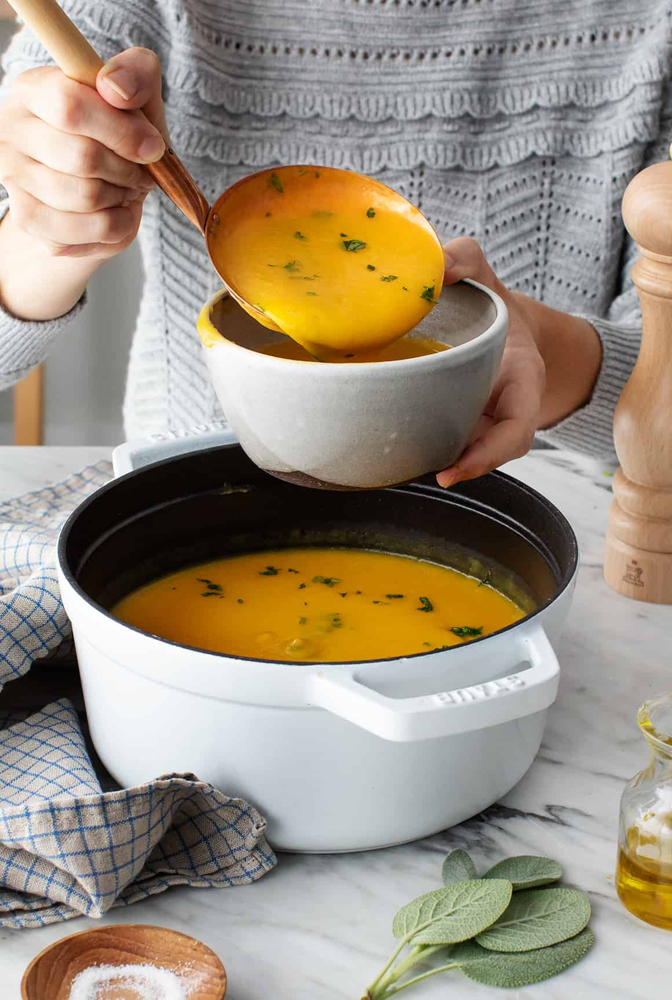

Butternut Pumpkin Soup

Ingredients
- 1 onion
- 1 butternutpumpkin peeled,seeded and cubed
- 3 garlic cloves, chopped
- c=1 tablespoon chopped fresh sage
- 1 teaspoon grated fresh ginger
- 4 cups vegetable broth
- freshly ground black pepper
Instructions
- Heat the oil in a large pot over medium heat. Add the onion
salt, and several grinds of fresh pepper and saute until soft
5 to 8 minutes. Add the pumpkin and cook until it begins to soften
stirring occasionally for 8 to 10 minutes.
- Add the garlic, sage, rosemary and ginger. Stir and cook 30 seconds to 1 minute
until fragrant, then add 4 cups of broth. Bring to a boil, cover and reducde
heat to a simmer. cook until the pumpkin is tender 20 to 30 minutes.
- Let cool slightly and pour the soup into a blender, working in batches
if necessary and blend until smooth. If your soup is too thick add up to 1 cup
more broth and blend. Season to taste and serve with parsley, pepitas and crusty bread.